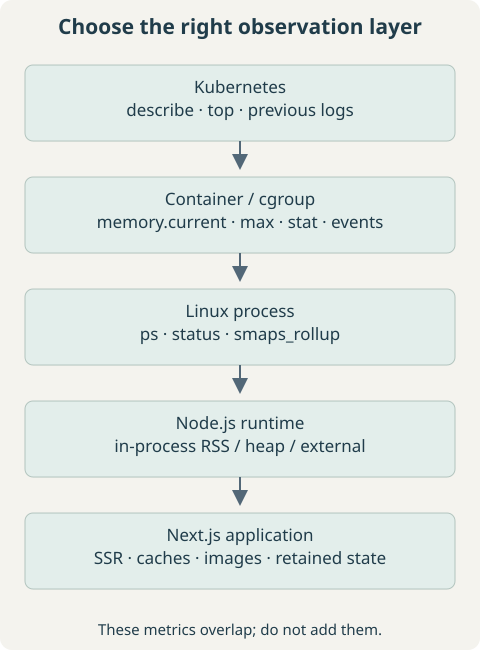
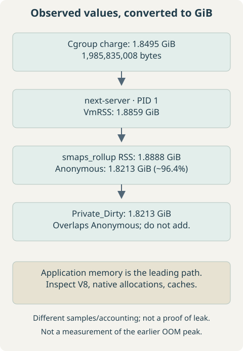
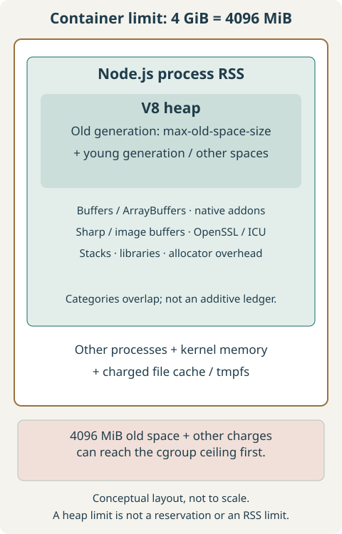
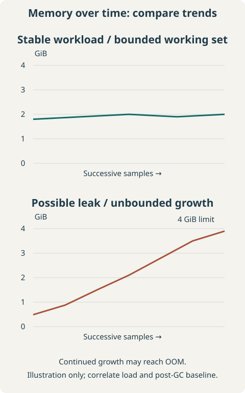
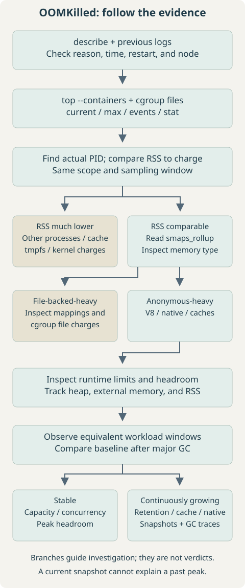

Start by identifying which layer owns the measurement: pod, container cgroup, Linux process, or JavaScript heap. A high value at one layer is a lead, not a diagnosis. This runbook uses sanitized observations from a Next.js memory investigation; it does not claim a confirmed leak or a measured fix.
Jump to: Kubernetes commands · cgroups · smaps_rollup · New-process pitfall · Heap headroom · Snapshots / GC · PromQL · Decision flow · Cheat sheet.
1. Problem / Symptoms
The supplied workload had a previous OOM termination and current memory around 1.85–1.9 GiB during investigation. Its container resources were approximately:
resources:
requests:
cpu: "1"
memory: "1536Mi"
limits:
cpu: "2"
memory: "4Gi"Last State: Terminated
Reason: OOMKilled
Exit Code: 137
Restart Count: 1The current readings are from the restarted workload, not the killed process’s peak. Do not conclude that a 4 GiB limit killed a process at 1.9 GiB merely because that is what the replacement process uses now.
2. Understanding OOMKilled and Exit Code 137
OOMKilled records an out-of-memory kill. A container cgroup reaching an enforced memory ceiling is a common cause; node-wide memory exhaustion can also kill a process. Inspect cgroup events and node evidence to distinguish them. Exit code 137 normally means 128 + 9, or SIGKILL, but 137 alone is not proof of an OOM: another actor can send that signal.
The reported restart count indicates that Kubernetes restarted this container. A memory limit is an enforced ceiling, not a target working set. A request is primarily used in scheduling and resource management; exceeding the 1536 MiB request does not by itself trigger a kill. A request is not a guarantee that the application cannot encounter memory pressure. See Kubernetes’ resource-management documentation.


3. Quick Kubernetes Memory Checks
Run these on your administrative workstation. Replace quoted placeholders before use; quotes prevent angle brackets from being interpreted as shell redirection.
kubectl top pod
kubectl top pod -n '<namespace>'
kubectl top pod -A --sort-by=memory
kubectl top pod '<pod-name>' -n '<namespace>'
kubectl top pod '<pod-name>' --containers -n '<namespace>'
watch -n 5 "kubectl top pod '<pod-name>' -n '<namespace>'"kubectl top requires a working resource metrics API, commonly provided by Metrics Server. Its memory view is a current working-set estimate, not JavaScript heap or an exact cgroup total. Scrape delays can miss a short spike. Use --containers to separate the application from sidecars, and historical graphs to inspect the failure window.
kubectl describe pod '<pod-name>' -n '<namespace>'
kubectl logs '<pod-name>' -n '<namespace>' -c server --previous
kubectl logs '<pod-name>' -n '<namespace>' -c server --previous --tail=200Find the terminated container’s reason, exit code, finish time, and restart count. Inspect events and node memory pressure if the evidence suggests node OOM or eviction. The generic container name server must match the target. Previous logs cover the previous container instance when retained; a hard SIGKILL may leave no application stack trace. An Evicted pod is a different lifecycle event from a container OOM restart.
kubectl exec -it '<pod-name>' -n '<namespace>' -c server -- shThe Linux commands below run in that container. Minimal images may lack a shell, procps, awk, or permission to read another process. Use an approved diagnostic image with the correct PID/cgroup visibility when needed; do not assume an ephemeral debug container sees the target’s cgroup just because it sees its processes.
4. Inspecting Container Memory With cgroups
cat /proc/self/cgroup
cat /proc/1/cgroup
cat /proc/self/mountinfo | grep cgroup
cat /sys/fs/cgroup/memory.current
cat /sys/fs/cgroup/memory.max
cat /sys/fs/cgroup/memory.events
cat /sys/fs/cgroup/memory.statThese paths assume cgroup v2 with the target container’s cgroup mounted at the visible root. If not, resolve the process’s cgroup path against the cgroup mount. Ancestor limits may also constrain it. A v2 membership line uses 0::; the visible namespace path can be /. Verify scope rather than comparing a pod parent to one child process.
1985835008awk '{printf "%.2f GiB\n", $1/1024/1024/1024}' /sys/fs/cgroup/memory.currentThe supplied value is 1.8495 GiB (about 1.85 GiB). memory.current reports bytes charged to the cgroup and its descendants: this can include anonymous memory, file cache, and kernel memory. It is not merely a sum of JavaScript heaps. memory.max is the hard limit in bytes, or max if no limit is set there; 4 GiB is 4,294,967,296 bytes.
Use memory.stat to inspect anon, file, shmem, and kernel charges; fields can overlap, so do not sum all lines. In memory.events, max, oom, and oom_kill distinguish limit encounters from kills. Their counters are not a timestamped history, and a recreated cgroup may not retain the earlier event. The kernel cgroup v2 reference defines these fields.
cat /sys/fs/cgroup/memory/memory.usage_in_bytes
cat /sys/fs/cgroup/memory/memory.limit_in_bytesThose v1 paths also depend on mount layout. Do not mix v1 filenames with v2 or assume a large v1 limit value is a meaningful application budget.
5. Finding the Process Consuming Memory
ps -eo pid,ppid,%mem,rss,vsz,args --sort=-rss
ps -ef
pgrep -a node
ps -p 1 -f
cat /proc/1/cmdline | tr '\0' ' '
printf '\n' The observed application was next-server at PID 1. Verify that in your container before using /proc/1; PID 1 might instead be an init process or shell. A renamed process can be missed by pgrep -a node. GNU procps supports the sorting command; BusyBox variants may not.
RSS is resident memory; VSZ is virtual address space. A large reservation is not equivalent to RAM in use. The %mem denominator may reflect host memory rather than the container limit, so compare bytes against the effective cgroup limit instead. Multiple workers require checking all relevant PIDs; summing RSS can double-count shared pages.
6. Understanding /proc/<pid>/status
grep -E 'VmRSS|VmSize|VmData|VmSwap' /proc/1/statusVmSize: 11435292 kB
VmRSS: 1977468 kB
VmData: 2528644 kB
VmSwap: 0 kB| Field | Interpretation |
|---|---|
| VmSize | Virtual address space, including reservations and mappings; not physical RAM usage. |
| VmRSS | Resident pages mapped by this process; includes shared pages and is approximate. |
| VmData | Virtual data-segment size; not the V8 heap or a resident-only measurement. |
| VmSwap | Swapped private anonymous memory reported for the process; not every possible shared-memory swap charge. |
Linux reports these “kB” fields in units of 1024 bytes. The supplied VmRSS is 1.8859 GiB. That is close in scale to the 1.8495-GiB cgroup charge, but is not an exact reconciliation. Different sample times, shared-page accounting, and approximate counters can explain a process RSS larger than cgroup usage. Capture comparable samples before assigning the discrepancy a cause.
7. Deep-Diving With smaps_rollup
cat /proc/1/smaps_rollupRss: 1980548 kB
Pss: 1927585 kB
Private_Dirty: 1909804 kB
Anonymous: 1909776 kB
Swap: 0 kB| Field | What it means |
|---|---|
| Rss | Resident pages mapped into the process, counting shared pages in each mapping owner. |
| Pss | Resident memory with shared pages apportioned among processes. |
| Anonymous | Memory not backed by ordinary files, often including heaps and native allocations. |
| Private_Dirty | Modified private pages; overlaps anonymous memory and is not an extra bucket to add to it. |
| Swap | Mapped memory moved to swap, as reported for these mappings. |
The supplied Rss is 1.8888 GiB, Pss is 1.8383 GiB, and Anonymous is 1.8213 GiB, roughly 96.4% of this Rss. Private_Dirty is also about 1.8213 GiB. These are overlapping classifications, not two separate 1.82-GiB allocations. The kernel /proc documentation explains the accounting.


Interpretation: application-owned anonymous mappings are the leading explanation for the process footprint. Investigate JavaScript retention, native allocations, Buffers, libraries, and caches. The small non-anonymous remainder weakens the “mostly mapped files” explanation, but unmapped filesystem cache is not measured by process smaps. Check cgroup file charges before ruling out cache; Kubernetes and node pressure are not categorically eliminated by this snapshot.
8. Common Mistake: node -e Measures a New Process
node -e "console.log(process.memoryUsage())"A result around 45 MB RSS and 4 MB heapUsed belongs to the new diagnostic process launched by this command. It does not inspect the running Next.js process, even when executed in the same container. It cannot contradict the application’s 1.9-GiB RSS.
Expose memory telemetry from code running in the application process, or use an already-authorized profiler for that process. An example to integrate temporarily into a controlled server entry point is:
const timer = setInterval(() => {
const { rss, heapUsed, heapTotal, external, arrayBuffers } = process.memoryUsage();
console.log({ rss, heapUsed, heapTotal, external, arrayBuffers });
}, 30000);
timer.unref();Values are bytes. heapUsed and heapTotal describe V8 heap usage; external includes memory associated with native objects, and arrayBuffers includes Node Buffers and is already included in external. Do not sum these overlapping fields into RSS. Stable heap with increasing RSS redirects attention toward native memory, Buffers, mappings, and fragmentation. Worker threads complicate isolate-level heap accounting; record which process/isolate emits each sample.
9. Node.js Memory vs Kubernetes Memory Limits
The supplied runtime environment reported Node 24.11.1, production mode, and a 4096-MiB old-generation ceiling. Inspect only the needed keys; a broad environment dump can contain credentials.
tr '\0' '\n' < /proc/1/environ | grep -E '^(NODE_VERSION|NODE_OPTIONS|NODE_ENV)='NODE_VERSION=24.11.1
NODE_OPTIONS=--max-old-space-size=4096
NODE_ENV=productionThe environment records configuration, not proof of the effective heap limit: command-line arguments can override options, and environment version labels can be stale. Inspect the actual command and deployment entry point. Even selected option values should be reviewed before sharing because preload paths or arguments can contain internal names.


10. Why 4096 MiB Old Space With a 4 GiB Limit Is Risky
--max-old-space-size=4096 sets an old-generation ceiling in MiB. It neither reserves that amount nor limits all RSS. Other V8 spaces, Node runtime allocations, Buffers/ArrayBuffers, native addons, Sharp image buffers, OpenSSL, ICU, thread stacks, shared libraries, and allocator fragmentation require additional space. Other processes and cgroup charges also matter.
If old space approaches 4096 MiB, the other charges can push the container into OOM before V8 reaches its own configured ceiling. This is an unsafe budget configuration, but the approximately 1.9-GiB sample alone does not establish that it caused the prior OOM. The version-matched Node CLI reference defines the option and allowed environment flags.
# Choose one value in the workload configuration, then roll out a test replica.
NODE_OPTIONS="--max-old-space-size=3072"
# Alternative with more nominal room for non-old-space memory:
NODE_OPTIONS="--max-old-space-size=2816"These leave 1024 MiB or 1280 MiB respectively between the old-space ceiling and a 4096-MiB container limit—not a guaranteed native-memory allowance. Measure representative peak concurrency, images, cache warm-up, and native memory. Lowering the limit can increase GC pressure or cause a V8 heap-limit failure sooner. Changing a variable in an exec shell does not reconfigure PID 1; update the launch configuration and replace the test container.
11. Stable Usage vs a Possible Memory Leak
Stable candidate: 1.8 -> 1.9 -> 2.0 -> 1.9 -> 2.0 GiB
Growth candidate: 500 MiB -> 900 MiB -> 1.5 -> 2.1 -> 2.8 -> 3.5 -> 3.9 GiB

A stable high footprint can be a capacity or configuration issue. Persistent growth warrants investigating retained objects, cache cardinality, long-lived connections, request/session state, and native allocations. Traffic growth and cache warm-up can also produce a rising curve. Compare equivalent traffic windows and the baseline after major GC; distinguish within-process growth from restart resets. Increasing the limit may only delay an OOM if growth remains unbounded.
12. Next.js-Specific Memory Investigation
| Area | Questions and evidence |
|---|---|
| JavaScript retention | Inspect global arrays/Maps, singleton caches, closures, event listeners, timers, session state, and request objects retained past their useful lifetime. |
| Caching | Inventory App Router/fetch caching, ISR, unstable_cache, and custom caches. Confirm behavior for the deployed Next.js version; not every cache is in-process RAM. Measure key cardinality, byte size, TTL, and eviction. |
| Image optimization | Correlate next/image and Sharp activity with image dimensions, concurrent transforms, Buffers, external memory, and RSS. Native allocations may be poorly represented by ordinary JS heap totals. |
| SSR and serialization | Measure large API responses, intermediate objects, rendered payloads, concurrency peaks, and accidental retention between requests. |
const cache = new Map();
// Entries keyed by unbounded request-specific values can accumulate.
// Measure growth and apply a workload-appropriate bound and eviction policy.Separate the deployed server from next build memory. Build-only debugging flags do not diagnose a running next-server. The Next.js self-hosting guide describes cache configuration; verify it against the version actually deployed. A cache or image library is a hypothesis here, not an observed culprit.
13. Heap Snapshots and GC Diagnostics
Warning: snapshot creation pauses work and can consume substantial additional memory, potentially crashing a near-limit process. Use a controlled replica or staging environment with headroom and a writable diagnostic directory. Heap snapshots may contain request data, tokens, and secrets: restrict access and retention, and never publish the files.
NODE_OPTIONS="--max-old-space-size=3072 --heapsnapshot-signal=SIGUSR2 --diagnostic-dir=/tmp/node-diagnostics"Create and permission the diagnostic directory for the application account before launch, with enough space. If it is backed by a memory-based volume, snapshot output itself adds memory pressure. Confirm the process actually started with the signal handler and that PID 1 is the intended Node process. Only then request a snapshot from inside that container:
kill -USR2 1Do not send SIGUSR2 blindly: without the configured handler it can terminate an ordinary process, and PID 1 has special signal behavior. Editing NODE_OPTIONS after startup does not install the handler. Use the actual Node PID if it is not 1. Load the resulting .heapsnapshot in Chrome DevTools’ Memory panel and compare snapshots after equivalent workload cycles. Follow the Node snapshot guidance.
- Inspect retained size, retaining paths, and dominators—not only shallow object size.
- Look for growing Maps/Sets, request arrays, duplicated strings, cached responses, and unexpected object graphs surviving collections.
- Buffers may expose wrapper objects and references, but a heap snapshot is not a complete native allocator profile. If heap is stable while RSS grows, investigate native/external memory separately.
GC tracing correction: do not put --trace-gc in NODE_OPTIONS for this Node version; it is not an allowed environment flag and can prevent startup. Pass it directly to Node in a controlled test launch. Choose the command matching the deployment layout:
# Standard Next.js installation; run from the application directory.
node --max-old-space-size=3072 --trace-gc ./node_modules/next/dist/bin/next start
# Alternative: a standalone Next.js output with server.js as its entry point.
node --max-old-space-size=3072 --trace-gc server.jsThese are alternatives, not commands to start alongside an already-running server. Preserve the deployment’s required arguments and environment. Tracing can be noisy and add overhead; scope its duration and remove it after diagnosis. The Node GC tracing guide explains before/after heap values and collector events.
3200 MB -> 3195 MB: little reclaimed; substantial live/retained heap
2000 MB -> 600 MB: substantial reclaimable allocation pressureThese are generic illustrative GC-log values, not expected readings under the 3072-MiB example. They refer to heap figures, not whole-process RSS or cgroup charge. A persistently rising post-major-GC baseline under comparable work suggests retention; a single collection proves neither a leak nor health. Native allocations and fragmentation can keep RSS high even when V8 heap drops.
14. Prometheus Queries for Historical Analysis
These queries assume cAdvisor/kubelet container metrics are scraped, with the shown labels. Availability and precise accounting vary by platform. Restrict to one cluster and a non-duplicated scrape source before aggregating; otherwise identical containers may be counted more than once.
container_memory_working_set_bytes{
namespace="<namespace>",
pod="<pod-name>",
container="server"
}container_memory_rss{
namespace="<namespace>",
pod="<pod-name>",
container="server"
}Working set typically excludes inactive file cache, but is neither exact non-reclaimable memory nor JavaScript heap. cAdvisor’s container RSS is cgroup-derived and is not interchangeable with the sum of process VmRSS. Compare trends at the same scope; use memory.stat and process mappings to explain the components.
topk(
10,
sum by (namespace, pod) (
container_memory_working_set_bytes{
container!="",
container!="POD"
}
)
)rate(
container_cpu_usage_seconds_total{
namespace="<namespace>",
pod="<pod-name>",
container="server"
}[5m]
)Overlay memory with request rate, concurrency, CPU/GC, restarts, deployments, and uptime. Look for plateaus, gradual growth, image/SSR spikes, and periodic reclaim. A five-second top sample or a coarser Prometheus scrape can miss the OOM peak; absence of a sampled limit crossing does not refute an OOM. CPU correlation can suggest GC or workload pressure, but does not establish causality.
15. Troubleshooting Decision Tree


- Confirm the termination: distinguish cgroup OOM, node pressure, eviction, and a non-OOM SIGKILL.
- Resolve the container scope: inspect limits, charge categories, and event counters.
- Locate the largest process: compare RSS/PSS with cgroup usage in the same time window.
- Classify mappings: anonymous-heavy suggests runtime/application memory; large cgroup file charges need a separate cache investigation.
- Check runtime headroom: old-space ceiling must leave room for all other memory.
- Observe the trend: stable usage leads to capacity and concurrency checks; persistent growth leads to retention, cache, or native profiling.
16. Command Cheat Sheet
kubectl top pod -n '<namespace>'
kubectl top pod '<pod-name>' --containers -n '<namespace>'
kubectl describe pod '<pod-name>' -n '<namespace>'
kubectl logs '<pod-name>' -n '<namespace>' -c server --previous --tail=200
kubectl exec -it '<pod-name>' -n '<namespace>' -c server -- shcat /sys/fs/cgroup/memory.current
cat /sys/fs/cgroup/memory.max
cat /sys/fs/cgroup/memory.events
cat /sys/fs/cgroup/memory.stat
awk '{printf "%.2f GiB\n", $1/1024/1024/1024}' /sys/fs/cgroup/memory.current
ps -eo pid,ppid,%mem,rss,vsz,args --sort=-rss
pgrep -a node
grep -E 'VmRSS|VmSize|VmData|VmSwap' /proc/1/status
cat /proc/1/smaps_rollup
cat /proc/1/cmdline | tr '\0' ' '
printf '\n'
tr '\0' '\n' < /proc/1/environ | grep -E '^(NODE_VERSION|NODE_OPTIONS|NODE_ENV)=' Use PID 1 only after identification, and the cgroup paths only after verifying their scope. Bytes ÷ 1,073,741,824 = GiB; /proc kB ÷ 1,048,576 = GiB. Do not compare decimal GB with binary GiB without conversion.
17. Key Takeaways
- Observed: a previous OOMKilled termination, approximately 1.85-GiB current cgroup charge, a similarly sized next-server RSS, and predominantly anonymous mappings.
- Supported inference: runtime/application memory is the leading investigation path. The data does not isolate JavaScript heap from native allocations or prove a leak.
- Configuration concern: a 4096-MiB old-space ceiling leaves no nominal room under a 4-GiB container ceiling for other charges. Test a measured headroom budget.
- Next evidence: time-series data and in-process metrics, followed by controlled snapshots or GC/native diagnostics. No successful remediation or eliminated root cause is claimed from these observations alone.